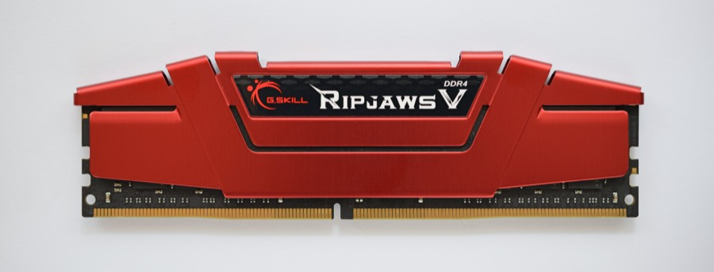

명령어 사이클의 최소 동작 단위와 기억장치의 종류·계층 · PART 01. 전자계산기구조론
마이크로 오퍼레이션 = 한 클럭 펄스 동안 실행되는 가장 작은 동작 단위. 명령어 하나는 여러 개의 마이크로 오퍼레이션으로 구성된다.
기억장치는 레지스터 > 캐시 > 주기억장치(RAM) > 보조기억장치 순으로 빠르고, 이 순서대로 용량은 커지고 가격은 싸진다.
우리는 보통 ADD A, B 같은 명령어 하나가 "한 방에" 실행된다고 생각한다. 하지만 CPU 입장에서는 그렇지 않다. 메모리에서 명령어를 가져오고, 무슨 명령인지 해독하고, 데이터를 레지스터로 옮기고, 계산하고, 결과를 되돌려 쓰는 여러 단계를 거쳐야 한다. 이 쪼개진 각 단계, 즉 클럭 한 번에 실행되는 가장 작은 동작이 마이크로 오퍼레이션이다.
그래서 시험에서 "하나의 명령어는 항상 하나의 마이크로 연산으로 실행된다"는 문장이 나오면 무조건 오답이다 (연습문제 1번이 정확히 이 문제다).
가장 빠른 메모리(레지스터·SRAM)로 컴퓨터 전체 메모리를 만들면 안 되나? 된다. 다만 미친 듯이 비싸다. 반대로 전부 하드디스크로 만들면 싸지만 CPU가 매번 수백만 클럭을 기다려야 한다.
그래서 나온 타협이 계층 구조다 — 자주 쓰는 소량의 데이터는 비싸고 빠른 곳에, 가끔 쓰는 대량의 데이터는 싸고 느린 곳에 둔다. 이 구조가 실제로 잘 작동하는 이유는 프로그램이 지역성(locality)을 갖기 때문이다(방금 쓴 데이터를 또 쓰고, 그 옆 데이터도 쓴다).
시험에서 가장 많이 나오는 "평균 기억장치 접근 시간" 계산 문제가 바로 이 타협이 실제로 얼마나 이득인지를 숫자로 묻는 것이다. 이 유형만 확실히 잡아도 이 단원 배점의 절반은 가져간다.
명령어 사이클 = 인출(Fetch) → (간접, 필요시) → 실행(Execute) → (인터럽트, 필요시) 사이클 순서로 진행
| 사이클 | 내용 |
|---|---|
| 인출 (Fetch) | 주기억장치의 정해진 위치에서 명령어를 읽어옴 |
| 간접 (Indirect) | 간접 주소지정 방식일 때 유효 주소를 찾는 과정 (필요한 경우만) |
| 실행 (Execute) | 해독된 명령어 코드에 따라 필요한 연산을 수행 |
| 인터럽트 (Interrupt) | 인터럽트 요구가 있을 때만 수행, 끝나면 다시 인출 사이클로 |
| 버스 | 방향 | 역할 |
|---|---|---|
| 주소 버스 (Address Bus) | 단방향 | 읽기/쓰기 대상 주기억장치 위치(주소)를 전달 |
| 데이터 버스 (Data Bus) | 양방향 | 실제 데이터를 주고받음 |
| 제어 버스 (Control Bus) | - | CPU ↔ 주기억장치·입출력장치 간 제어 신호 전달 |
레지스터 → 캐시 → 주기억장치(RAM) → 보조기억장치(HDD/SSD) 순으로 계층이 낮아질수록 속도는 느려지고, 용량은 커지며, 비트당 가격은 싸진다.
이 단원 계산 문제의 90%가 이 하나의 공식에서 나온다. 기본 아이디어는 단순하다 — "적중했을 때 걸리는 시간 × 적중 확률 + 실패했을 때 걸리는 시간 × 실패 확률", 즉 가중평균이다.
여기서 수험생이 가장 많이 틀린다. 캐시에서 실패하면 주기억장치로 가야 하는데, "이미 캐시를 뒤져본 시간"을 포함하느냐 마느냐가 문제 지문에 따라 다르다. 두 유형을 구분하는 법:
| 유형 | 실패 시 시간 | 지문에서 알아보는 법 |
|---|---|---|
| A. 캐시 시간 포함 | 캐시 시간 + 주기억 시간 | "유효 접근 시간", 또는 "캐시 실패 손실(miss penalty)"이 따로 주어짐 |
| B. 캐시 시간 무시 | 주기억 시간만 | 그냥 "평균 접근 시간"만 묻고 별도 조건 없음 |
실전 요령: 일단 계산해보고 선택지에 딱 맞는 답이 있는 쪽을 고르면 된다. 두 방식의 답이 둘 다 선택지에 있는 경우는 거의 없다. 아래 연습문제 3번(A유형)과 4번(B유형)을 비교해보면 차이가 확실히 보인다.
적중률을 거꾸로 구하는 문제도 자주 나온다. 공식은 같고 미지수만 h로 두면 된다:
| 구분 | SRAM (Static RAM) | DRAM (Dynamic RAM) |
|---|---|---|
| 저장 방식 | 플립플롭(flip-flop) | 축전기(capacitor)의 충전 상태 |
| 재충전(refresh) | 불필요 | 필요 (전하가 시간이 지나면 방전되므로 주기적 재충전) |
| 속도 | 빠름 | 느림 (SRAM 대비 약 1/5) |
| 가격/소비전력 | 비쌈 | 저렴, 소비전력 적음 |
| 집적도 | 낮음 | 높음 (대용량에 유리) |
| 주 용도 | 캐시 기억장치 | 주기억장치 |
| 휘발성 | 휘발성 | 휘발성 |

| 종류 | 특징 |
|---|---|
| Mask ROM | 제작 시 데이터를 회로에 새겨 넣음. 내용 변경 불가능 |
| PROM | Programmable ROM. 1회에 한해 사용자가 새로운 내용을 기록 가능 |
| EPROM | Erasable PROM. 자외선으로 지우고 여러 번 재기록 가능 |
| EEPROM | Electrically Erasable PROM. 전기적으로 지우고 재기록 가능 |
| 플래시 메모리 | EEPROM의 한 종류지만 블록 단위로 데이터를 기록 (EEPROM은 바이트 단위) |
| 구분 | NAND Flash | NOR Flash |
|---|---|---|
| 셀 배치 | 직렬 | 병렬 |
| 용도 | 대용량 데이터 저장형 (MP3, 카메라, USB, SSD) | 속도 빠른 코드 저장형 (휴대폰 등) |
| 대용량화 | 쉬움 | 어려움 |
| 읽기/쓰기 단위 | 페이지(page) 단위 | 바이트/워드 단위 임의 접근 |
| 지우기(erase) 단위 | 블록(block) 단위 | 블록 단위 |
공통점: 전원이 꺼져도 데이터 보존(비휘발성), 덮어쓰기(overwrite) 전에 반드시 지우기(erase) 선행 필요, 지우기 속도는 읽기보다 느림.
여러 개의 디스크를 하나의 논리적 디스크처럼 묶어 신뢰성 또는 처리 속도를 향상시키는 기술.
| 레벨 | 기법 | 특징 |
|---|---|---|
| RAID 0 | 스트라이핑 (Striping) | 데이터를 여러 디스크에 분산 저장. 속도↑ 하지만 중복 저장 없음 → 오류 복구 불가 |
| RAID 1 | 미러링 (Mirroring) | 모든 데이터를 복사해서 별도 디스크에 저장. 신뢰성 높지만 저장 효율 낮음(50%) |
| RAID 2 | 비트 단위 분산 + 해밍코드 | 여러 개의 패리티 디스크 사용 (해밍코드로 오류 검출·교정) |
| RAID 3 | 비트 단위 분산 + 패리티 | 전용 패리티 디스크 1개 사용 |
| RAID 4 | 블록 단위 분산 + 패리티 | 전용 패리티 디스크 1개 사용 (패리티 디스크에 병목 발생) |
| RAID 5 | 블록 단위 + 패리티 분산 | 패리티를 여러 디스크에 분산 저장 (병목 해결) |
| RAID 6 | 블록 단위 + 이중 패리티 | 패리티를 2중으로 구성해 디스크 2개까지 장애 허용 |
기억장치를 여러 개의 모듈로 나누고, 각 모듈에 독립적으로 동시에 접근할 수 있게 하여 CPU와 기억장치 사이의 실질적 대역폭을 늘리는 방법. 연속된 주소의 데이터를 한 번의 사이클에 병렬로 꺼낼 수 있다.
| 구분 | 리틀 엔디안 (Little Endian) | 빅 엔디안 (Big Endian) |
|---|---|---|
| 저장 순서 | 하위 바이트를 낮은 주소에 저장 | 상위 바이트를 낮은 주소에 저장 |
| 대표 CPU | x86 계열 | 일부 RISC, 네트워크 프로토콜 |
접근 시간(Access Time) = 탐색시간(Seek Time) + 회전지연시간(Rotational Latency) + 전송시간(Transfer Time)
| 용어 | 의미 |
|---|---|
| 탐색시간 (Seek Time) | 헤드가 목표 트랙(실린더)까지 이동하는 시간 |
| 회전지연시간 (Latency) | 디스크가 회전해 목표 섹터가 헤드 밑에 올 때까지의 시간 |
| 전송시간 (Transfer Time) | 실제 데이터를 읽거나 쓰는 시간 |
용량 계산 문제를 풀려면 용어들이 물리적으로 뭘 가리키는지부터 알아야 한다. 하드디스크는 여러 장의 원판(platter)이 겹쳐 돌아가는 구조다.
계산할 때는 전부 2의 거듭제곱으로 바꿔서 지수를 더하는 것이 가장 빠르다. 512 = 2⁹, 256 = 2⁸, 32768 = 2¹⁵, 4 = 2² → 지수 합 9+8+15+2 = 34 → 2³⁴ B = 2⁴ × 2³⁰ = 16GB. 연습문제 6번이 바로 이 문제다.
| 구분 | SRAM | DRAM |
|---|---|---|
| 소자 | 플립플롭 | 축전기(capacitor) |
| 재충전 | 불필요 | 필요 |
| 속도/가격 | 빠름/비쌈 | 느림/저렴 |
| 용도 | 캐시 | 주기억장치 |
| 구분 | 페이징 (고정 크기) | 세그멘테이션 (가변 크기) |
|---|---|---|
| 단편화 | 내부 단편화 발생 | 외부 단편화 발생 |
| 단위 | 페이지 | 세그먼트 |
| 구분 | NAND Flash | NOR Flash |
|---|---|---|
| 용도 | 대용량 저장 | 고속 코드 실행 |
| 접근 방식 | 페이지 단위 순차 | 바이트/워드 단위 임의 접근 |
먼저 스스로 풀어본 뒤 "해설 보기"를 눌러 확인하세요. 3~5번은 매년 출제되는 계산 유형이니 반드시 손으로 풀어볼 것.
마이크로 연산(micro-operation)에 대한 설명으로 옳지 않은 것은?
정답 ③ — 하나의 명령어는 여러 개의 마이크로 연산으로 실행된다
명령어 사이클은 인출(Fetch)·실행(Execute) 등의 부 사이클로 나뉘고, 그 부 사이클도 다시 여러 단계로 쪼개진다. 이 각 단계 하나하나가 마이크로 연산이다. 즉 명령어 1개 : 마이크로 연산 여러 개의 관계다.
예를 들어 인출 사이클만 해도 MAR←PC → MBR←M[MAR], PC←PC+1 → IR←MBR 로 최소 3단계가 필요하다.
함정: "항상 하나의"처럼 단정적인 표현이 들어간 선택지는 오답일 확률이 높다. 나머지 ①②④는 모두 마이크로 연산의 정확한 설명이다.
다음에서 ㉠과 ㉡에 들어갈 내용이 올바르게 짝지어진 것은?
명령어를 주기억장치에서 중앙처리장치의 명령 레지스터로 가져와 해독하는 것을 ( ㉠ ) 단계라 하고, 이 단계는 마이크로 연산 ( ㉡ )으로 시작한다.
정답 ① ㉠ 인출, ㉡ MAR ← PC
MAR ← PC함정: MAR ← MBR(AD)는 MBR에 담긴 명령어의 주소 필드(AD)를 MAR로 보내는 것으로, 간접 사이클이나 실행 사이클에서 피연산자를 가지러 갈 때 쓰는 동작이다. 인출의 시작이 아니다.
다음 조건에서 기억장치의 유효 접근 시간[ns]은?
• 캐시 적중률 : 90%
• 캐시 메모리 접근 시간 : 30ns
• 주기억장치 접근 시간 : 100ns
정답 ④ 40ns
"유효 접근 시간"을 묻는 A유형 — 실패했을 때 캐시를 뒤져본 시간도 포함해서 계산한다.
함정: 캐시 접근 시간을 빼고 (0.9×30)+(0.1×100) = 37ns로 계산하면 선택지에 없다. 선택지에 답이 없으면 반대 유형으로 다시 계산해보라는 신호다.
캐시기억장치 접근시간이 20ns, 주기억장치 접근시간이 150ns, 캐시기억장치 적중률이 80%인 경우에 평균 기억장치 접근시간은? (단, 기억장치는 캐시와 주기억장치로만 구성된다)
정답 ② 46ns
문제 3번과 똑같아 보이지만 계산 방식이 다른 B유형이다. 여기서는 실패 시 주기억장치 접근시간만 센다.
두 유형 구분법: A유형(30+100)으로 풀면 0.8×20 + 0.2×170 = 50ns인데 선택지에 50ns가 없다. 반대로 B유형 46ns는 ②번에 있다 → B유형이 출제 의도. 계산해보고 선택지에 맞는 쪽을 고르는 것이 실전 요령이다.
함정: ③번 124ns는 적중률과 실패율을 바꿔 (0.2×20 + 0.8×150) 계산한 오답이다.
주기억장치와 CPU 캐시 기억장치만으로 구성된 시스템에서 다음과 같이 기억장치 접근 시간이 주어질 때 이 시스템의 캐시 적중률(hit ratio)로 옳은 것은?
• 주기억장치 접근 시간 : Tm = 80ns
• CPU 캐시 기억장치 접근 시간 : Tc = 10ns
• 기억장치 평균 접근 시간 : Ta = 17ns
정답 ③ 90%
평균 접근 시간을 거꾸로 이용해 적중률을 구하는 유형. 공식은 똑같고 미지수만 h로 두면 된다.
검산 습관: 구한 h를 원식에 넣어 확인 — 0.9×10 + 0.1×80 = 9 + 8 = 17 ✓. 적중률 문제는 검산이 10초면 되니 반드시 할 것.
다음 조건에서 메인 메모리와 캐시 메모리로 구성된 메모리 계층의 평균 메모리 접근 시간은? (단, 캐시 실패 손실은 캐시 실패 시 소요되는 총 메모리 접근 시간에서 캐시 적중 시간을 뺀 시간이다.)
• 캐시 적중 시간(cache hit time) : 10ns
• 캐시 실패 손실(cache miss penalty) : 100ns
• 캐시 적중률 : 90%
정답 ③ 20ns
"실패 손실(miss penalty)"이라는 용어가 나오면 정의를 그대로 역이용하면 된다.
함정: 실패 손실 100ns를 그대로 "실패 시 총 시간"으로 착각하면 0.9×10 + 0.1×100 = 19ns가 나오는데 선택지에 없다. miss penalty는 "추가로 더 걸리는 시간"이지 총 시간이 아니다.
다음과 같은 특성을 갖는 하드 디스크의 최대 저장 용량은?
• 실린더(cylinder) 개수 : 32,768개
• 면(surface) 개수 : 4개
• 트랙(track) 당 섹터(sector) 개수 : 256개
• 섹터 크기(sector size) : 512 bytes
정답 ② 16GB
모든 수를 2의 거듭제곱으로 바꿔 지수만 더하는 것이 가장 빠르고 실수가 없다.
핵심 함정: "실린더"와 "트랙"을 따로 곱하면 안 된다. 실린더는 여러 면의 같은 번호 트랙을 묶어 부르는 이름일 뿐, 별개의 저장 공간이 아니다. 둘 다 곱하면 답이 4배 커져 ③번 64GB가 나온다.
RAID(Redundant Array of Inexpensive Disks)에 대한 설명으로 알맞지 않은 것은?
정답 ③ — RAID-4는 비트 단위가 아니라 블록 단위로 분할한다
RAID 레벨을 외울 때 "분할 단위(비트냐 블록이냐)"와 "패리티 위치(전용 디스크냐 분산이냐)" 두 축으로 정리하면 헷갈리지 않는다.
| 레벨 | 분할 단위 | 패리티 |
|---|---|---|
| RAID 2 | 비트 | 해밍코드, 패리티 디스크 여러 개 |
| RAID 3 | 비트 | 전용 디스크 1개 |
| RAID 4 | 블록 | 전용 디스크 1개 |
| RAID 5 | 블록 | 여러 디스크에 분산 |
구분 포인트: 3과 4의 차이는 오직 분할 단위(비트 vs 블록), 4와 5의 차이는 오직 패리티 위치(전용 vs 분산)다. 이 문제는 4를 3의 설명으로 바꿔치기한 전형적인 함정이다.